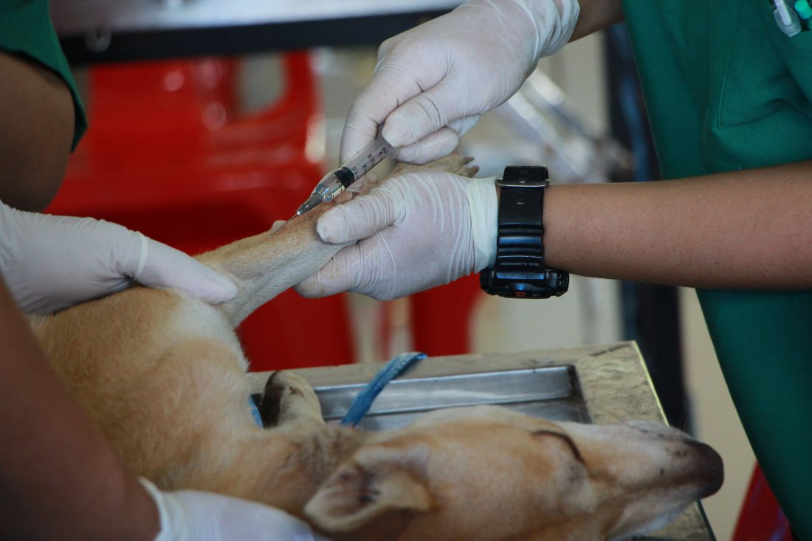
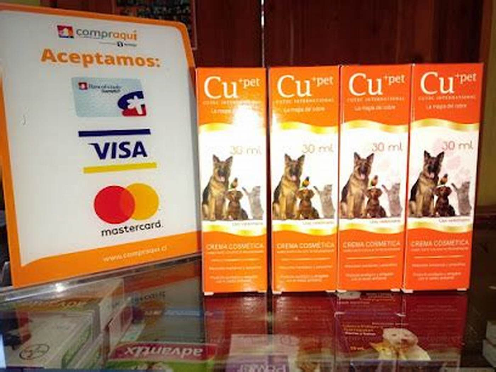

Veterinaria · Loncoche
¿O tengo que ir
a Temuco igual?
Es la pregunta que se hace el vecino antes de llamar, y la que decide si sale de la casa o si toma la carretera. Una veterinaria de pueblo que contesta eso por escrito —lo que hace acá y lo que no— gana más confianza que una que promete de todo.
- nota en Google
- 4,6
- reseñas
- 46
- teléfono
- 9 5514 3213
El alcance, dicho de frente
Lo que se resuelve en el pueblo
Ninguna clínica chica hace de todo, y decirlo no resta: ordena. El dueño que sabe de antemano qué se hace acá deja de perder una mañana averiguándolo, y el que necesita otra cosa llega derecho donde corresponde.
En Loncoche
Acá
Sin salir del pueblo
- La consulta de siempre: el animal que come mal, que cojea, que se rasca.
- Vacunas y desparasitación, con su calendario.
- Las urgencias menores — una herida, una otitis, algo que se comió.
- Controles, curaciones y seguimiento de un tratamiento ya empezado.
- Lo de peluquería o baño, si es que lo hacen.
falta: la lista real de esta clínica — ésta es la de una veterinaria de pueblo cualquiera, no la de ustedes
A 90 kilómetros
Se deriva
Lo que necesita otra pieza o otro equipo
- Cirugía mayor, la que pide pabellón y anestesista.
- Imagenología: radiografía, ecografía, scanner.
- Especialidades — traumatología, oftalmología, oncología.
- Hospitalización de varios días con monitoreo.
falta: qué deriva esta clínica y a dónde
Esta sección es la más incómoda de escribir y la que más vende. Una vet que publica lo que NO hace está diciendo, sin decirlo, que lo que sí hace lo hace en serio.

Lo que decide el vecino antes de llamar
Si sale de la casa o toma la carretera
Entre Loncoche y Temuco hay una hora de camino, y esa hora se decide antes de marcar el teléfono. Una veterinaria de pueblo que dice por escrito qué resuelve acá y qué deriva gana más confianza que una que promete de todo: nadie se enoja porque lo manden a Temuco, se enojan cuando lo descubren después de manejar.
Cuando toca ir a Temuco
La derivación acompañada
Derivar mal es entregar un papel y decir «vaya para allá». Derivar bien es que el dueño llegue a Temuco con todo resuelto menos manejar. Es la diferencia entre perder a un cliente y ganarlo para siempre.
-
Antes de que salga
El papel completo
La ficha de lo que se hizo acá: qué se encontró, qué se le puso, qué exámenes tiene. Sin eso, en Temuco parten de cero y el dueño paga dos veces la misma consulta. falta: si entregan la derivación por escrito o por correo
-
La llamada
Avisar que va en camino
Un teléfono antes de que el auto salga de Loncoche cambia la llegada: el otro equipo sabe qué viene y por qué. falta: con qué clínicas de Temuco trabajan
-
El viaje
Cómo se traslada
Un animal que va derivado casi nunca va bien: hay que decir cómo acomodarlo, si puede comer antes, qué mirar en el camino y cuándo detenerse.
-
A la vuelta
El control queda acá
Lo que sigue después —curaciones, puntos, controles— vuelve al pueblo. Es la parte que el dueño agradece: no tener que manejar noventa kilómetros para que le miren una herida. falta: confirmar que reciben el post operatorio de vuelta
Nada de lo escrito acá es indicación veterinaria ni una lista oficial de prestaciones: es la estructura de una página, con el contenido de ejemplo puesto para que se vea cómo queda. La lista definitiva la escribe y la firma la clínica.
«¿O tengo que ir a Temuco igual?»
La pregunta que se hace el vecino antes de llamar
Para consultar o pedir hora
9 5514 3213
Es el número publicado en su ficha de Google.


El mesón
Foto publicada por la propia clínica en su Facebook. Es lo que hay: el mostrador con los medios de pago a la vista y el producto en la vitrina.

falta: la fachada, el box y una foto del equipo. Hoy en internet sólo hay afiches de horario — ni una sola imagen del lugar por dentro.